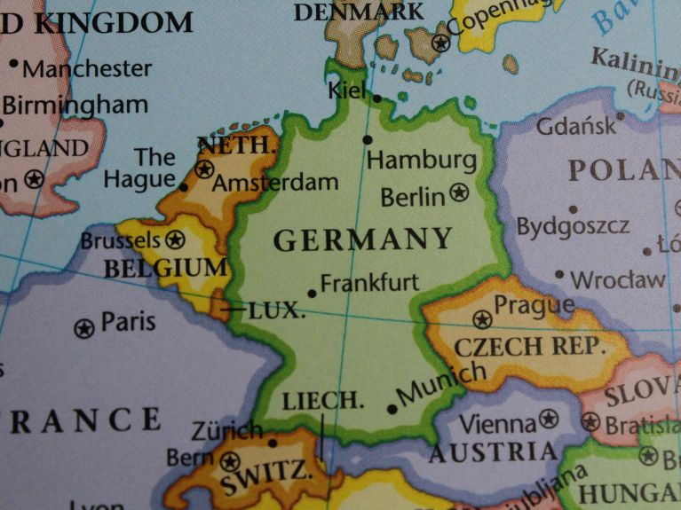

Language
German comes from the West Germanic languages, which originated from Proto-Germanic in Northern Europe, evolving through Old High German (8th century) and Middle High German (Middle Ages) into modern German, largely standardized thanks to Martin Luther's translation of the Bible in the 16th century, which unified dialects and popularized a common written form.
The official language of Germany is German (Deutsch). It is a West Germanic language spoken as a first language by over 95% of the population.


Characteristics:
Standard German (Hochdeutsch): This is the standardized form used in government, education, and media.
Alphabet: It uses the 26-letter Latin alphabet plus three umlauts (ä, ö, ü) and the special letter ß (Eszett)
Grammar: Known for its complexity, it features four noun cases, three genders, and capitalizes all nouns.
Compound Words: German is famous for creating very long words by joining smaller ones